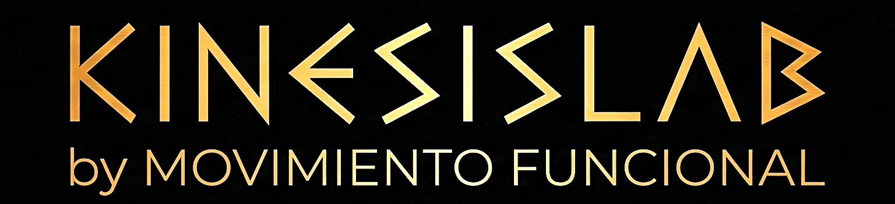

Go / No-Go
Toca en verde, frena en rojo. Mide tiempo de reacción y falsos positivos.

tune Elige por categoría o busca directamente la herramienta que necesitas para entrenar el cerebro mientras te mueves
Reaccionar rápido ante estímulos cambiantes. Entrena la capacidad de dividir atención entre tarea física y cognitiva.
Toca en verde, frena en rojo. Mide tiempo de reacción y falsos positivos.
Cambios de dirección aleatorios en 8 ejes. Mueve tu cuerpo hacia donde apunta.
Reacciona al color que cambia. Toma de decisiones rápida bajo presión visual.
Reacción auditiva pura. Discrimina frecuencias y ejecuta el movimiento asignado.
Agilidad multimodal. Señales visuales y auditivas aleatorias exigen reacción inmediata.
Estímulos visuales y auditivos incongruentes. Inhibe la respuesta automática.
Sigue el objetivo en movimiento con giros cervicales y estabilidad axial.
Localiza el intruso entre distractores. Atención selectiva visuoespacial.
Traza letras y números en el aire. Coordinación visomotora y planificación motora.
Retener y manipular información mientras el cuerpo está en movimiento. Clave para la autonomía funcional.
Memoriza los números y decide si estaban ordenados de menor a mayor.
Memoriza objetos y ordénalos por tamaño. Adaptación del NIH Toolbox List Sorting.
Detecta cuándo el estímulo coincide con el de N posiciones atrás.
Memoriza y replica el orden exacto de los destellos visual-sonoros.
Memoriza las posiciones iluminadas momentáneamente en la cuadrícula.
Encuentra parejas ocultas volteando cartas. Ideal para trabajar en parejas.
Procesar información compleja bajo carga motora. Aritmética, razonamiento espacial y recuperación léxica.
Suma dos números e indica si el total es mayor o menor que 50.
Nombra elementos de categorías semánticas y fonémicas sin perder el patrón motor.
Escucha una hora y decide si las agujas están del mismo lado o en lados opuestos.
Temporizadores, combos de boxeo y salto a la comba guiado por voz para tus sesiones.
Salto guiado por voz. Cambia pies o técnica según órdenes a ritmo exigente.
Combos caóticos de golpes y esquivas bajo estrés verbal rítmico.
Reloj en alto contraste para rutinas AMRAP, EMOM y pausas medidas.